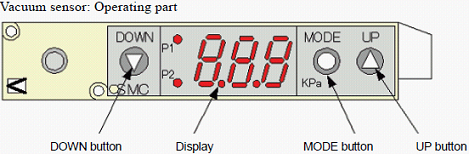
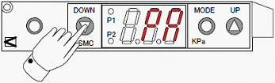
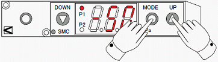
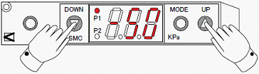
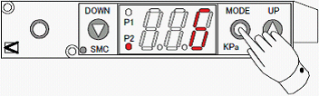
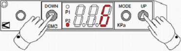
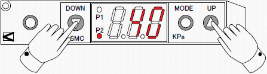
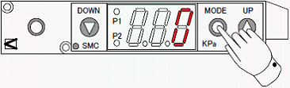
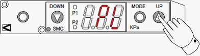

A1-2 How to adjust about vacuum sensor ( 2 )
Index unit vacuum sensor adjustment for NS-8000 ( Digital display type )
Index Unit Vacuum Sensor Setting (Digital display type)

Basic Setting
1. Key operation is locked at shipping in order to protect the setting.
Press the <DOWN> button for more than three seconds, “PA” blinks in the display and the key operation is unlocked.

2. Press the <MODE> and <UP> buttons at one time for more than one second.
When it turns to the Pressure Setting Mode, P1 LED blinks.

3. Set the P1 value by pressing the <UP> and <DOWN> button.
P1 basic setting value is -50 KPa (the value at shipping).

4. Press the <MODE> button. P2 LED blinks.
NOTE: If you press the <MODE> button for more than one second, it goes back to the Measurement
Mode. In this case, go back to the step 2.

5. Set the P2 value by pressing the <UP> and <DOWN> buttons.
P1 basic setting value is +6 KPa (the value at shipping).

NOTE: NS-8040 manufactured before the year 2007 may have the chattering error caused from the wiring during the normal operation.
For this, set the P2 value at +40 KPa.

6. Press the <MODE> button for more than one second and go back to the Measurement Mode.

7. Turn ON the Vacuum.
8. Confirm that the display shows a higher value than -50 KPa (e.g. -25 KPa) without a device and that
P1 LED is off.
9. While picking up a device, confirm that the display shows a lower value than -50 KPa (e.g. -78 KPa) and that P1 LED is ON.
* For small size devices, the pickup nozzle has a smaller diameter, and therefore, the negative pressure difference between with and without the device is small. With this, the detection can be unstable (or impossible) with the Basic Setting above. In this case, change the P1 value.
<Example> With the device: -75 KPa Without the device: -52 KPa
then set P1 = -60 KPa
10. Lock the key operation in order to protect the setting.
Press the <UP> button for more than three seconds, “PL” blinks and the key operation is locked.
